api.Data.Calculate
If you’ve been skimming through the book thus far, now is the time to pay attention. In the first two chapters, the foundation of knowledge to understand how to write Calculations was laid. Now, we will apply much of that knowledge using the api.Data.Calculate function. For purposes of conciseness, I will also refer to it as the ‘ADC’ function going forward.
In OneStream’s ocean-deep library of API functions, there isn’t one that gets much more use than the ADC function. Its pervasive use is no doubt due to its power and flexibility, which allows it to be employed to solve a wide variety of Calculation requirements.
In this chapter, I will breakdown the ADC function and explain how it can handle the lion’s share of your Calculation requirements.
api.Data.Calculate
A Quick Revisit
In Chapter 2, we defined a Data Buffer as a collection of data cells in a Data Unit. Aside from the Cell Amount and Dimension information, a Data Buffer contains other information about a data cell such as Cell Status and Storage Type. The ADC function allows you to perform arithmetic on Data Buffers. Simply put, the ADC function multiplies groups of data cells together, allowing you (potentially) to create thousands of calculated data cells with just one line of script.
api.Data.Calculate
With Great Power Comes Great Responsibility
Calculations can have a significant impact on Cube processing times and reporting performance. Creating additional data cells from Calculations increases Data Unit size which means servers need to use more memory and processing time to retrieve them. To that point, it is important to only calculate data that is necessary, and which provides analytic value. We know that while a Data Buffer could be all data cells in a Data Unit, most Calculations do not need to work with that much data. Most Calculations will work with Data Buffers that are smaller subsets of the Data Unit.
Techniques on how to increase Calculation efficiency and reduce Calculation scope will be introduced in this chapter and expounded on in Chapter 7.
api.Data.Calculate
Syntax
The ADC function will accept several arguments with the formula string being the only one that is required.
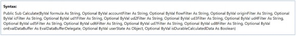
api.Data.Calculate(“FormulaString”)
The formula string is like any math formula you’ve written in elementary school e.g., 1 + 2 = 3 except we replace each numerical operand with the coordinates of a Data Buffer represented by a Member Script.
api.Data.Calculate(“A#AccountA = A#AccountB + A#AccountC”)
| Note: Syntax mistakes or typos within the formula string will pass compile checks successfully and will not reveal themselves until Calculation execution time. This is because the syntax used within api.Data.Calculate is interpreted at runtime to support dynamic objects (such as T#PovYear Time filter) by the Calculation Engine and not compiled by the .NET compiler on save. |
The other arguments that can be passed into the ADC function are listed below with a brief definition and will be further explored later in this chapter:
<dimension>Filter– a Member Script string which will limit the scope of the formula execution.onEvalDataBuffer– a customized function that runs on the Data Buffer enclosed in the
Eval() syntax; used for particular use cases that will be later described.
userState– a User State Object.isDurableCalculate– True/False which changes the StorageTypefrom
Calculation to DurableCalculation.
api.Data.Calculate
Simple Example
To illustrate how the ADC function works, let’s dive into an example and I’ll explain what is happening along the way.
As the Director of FP&A, Curly wants to create a simple driver-based Calculation to forecast Sales. Driver data for Volume and Price Accounts have been loaded to the Cube.
Curly creates a simple api.Data.Calculate which multiplies Price and Volume.
api.Data.Calculate(“A#Sales = A#Price * A#Volume”)
A#Price, and A#Volume represent Data Buffers containing multiple records of data cells; for example, they might have Product or Cost Center details. A#Sales represents the empty destination Data Buffer that will be filled with the cells of the formula Result Data Buffer.
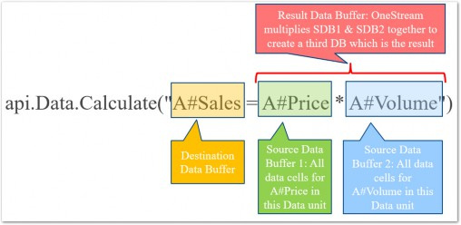
Figure 3.1
As shown above, the Calculation formula is contained within a string with each operand in our equation being a Member Filter. OneStream converts each Member Filter to a Data Buffer and multiplies the Price and Volume Data Buffers together, writing the result to a new Data Buffer defined by A#Sales.
Note: The Formula String is not case sensitive – A#Price. |
api.Data.Calculate › Simple Example
Breakdown
The simplicity of the api.Data.Calculate function has a downside, in that it can obscure what OneStream is really doing. So, what’s really happening under the hood?
The
A#PriceData Buffer – from the current Data Unit being processed – is retrieved from storage in the Cube.The
A#VolumeData Buffer – from the current Data Unit being processed – is retrieved from storage in the Cube.Data Buffer Math multiplies the two Data Buffer together and creates a new Data Buffer (multiplication of many numbers).
An empty Data Buffer is created for
A#Sales.The result cells are added to the
A#SalesData Buffer and saved to the Cube.
api.Data.Calculate › Simple Example › Breakdown
Data Buffer Math
Looking over the above series of steps, it’s clear we’ve conveniently glazed over a pretty big concept – Data Buffer math. This is where the all the magic happens so let’s dive into how it works.
Data Buffer math starts with the Data Buffers and ultimately results in math of individual cells – but how does it get there? OneStream analyzes each Data Buffer cell in the formula, ‘matches them up’ based on common Dimension Members, then performs the math on the individual cells. The result of the math creates a new Data Buffer which is added to a new Result Data Buffer. Let’s continue the Sales Calculation example to see how it works.
First let’s visualize the A#Price and A#Volume Data Buffers. We can do this by using the api.Data.GetDataBufferUsingFilter function along with LogDataBuffer.
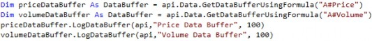
If we execute this script (by either triggering the DUCS or a Custom Calculation), we can see both Data Buffers in the Error Log.
Price Data Buffer:
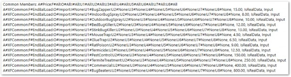
Figure 3.2
Volume Data Buffer:
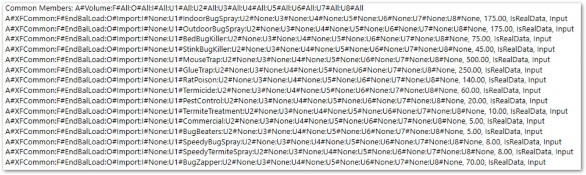
Figure 3.3
We can see the individual data cells that make up each of our Data Buffers above. Note that – along with the dimensional information – we also see the Cell Amount, Cell Status, and Storage Type as discussed in detail in the previous chapter.
There are a few other things to take note of here. First, notice that A#Price and A#Volume are listed in the Common Members section and A#XFCommon is listed in the Member Script of the data cells. The reason for this is that Data Buffer math is only performed on cells with identical dimensional Member details.
Since we know from the previous chapter that the dimensional details of a data cell make up its Primary Key (PK), we know that one data cell PK in a Data Buffer can only correspond to a maximum of one data cell PK in another Data Buffer. OneStream will simply multiply the data cells from the Price Data Buffer with the data cells from the Volume Data Buffer that have the same PK or dimensional details. Since the Account is obviously different between the two Data Buffers, XFCommon takes its place.
Let’s look at the resulting Data Buffer, logged after the ADC function runs.
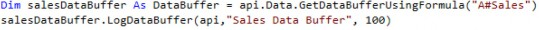
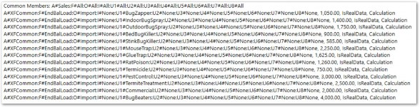
Figure 3.4
In this simplified example, all Dimensions but one – U1 – Product – are at the None Member, so it is easy to see which ones have matching Dimension details.
U1#BugZappers results in 1,050 (70*15), U1#IndoorBugSpray results in 1,400 (175*8) and so on. The only Members that we see in one of the Source Data Buffers that we don’t see in the result is U1#SpeedyBugSpray and U1#SpeedyTermiteSpray. Since there is no corresponding data cell for these Members in the A#Price Buffer, no Calculation is performed on these cells and no data cell is created in the Result Buffer.api.Data.Calculate › Simple Example › Breakdown
Current Data Unit Being Processed
In the above breakdown, I was careful to specify that the Data Buffer was being retrieved from the current Data Unit being processed. As we already know, every data cell in the Cube is described by all 18 Dimension Types known as the Data Cell Primary Key. We can see that the Data Unit Dimensions – Cube, Entity, Scenario, Time, and Consolidation – are not shown in the Data Buffer at all. This is because those Dimensions are known by the Calculation Engine as it processes the DUCS. The Calculation Engine knows these Dimensions when they were defined on the execution of the Calculation (in our case a Data Management step).
api.Data.Calculate › Simple Example › Breakdown › Current Data Unit Being Processed
Data Unit Dimensions in the Destination Script
Since the Data Unit being processed is known in the background by the Calculation Engine, the Data Unit Dimensions should never be included in the destination Member Script (the left side of the formula).
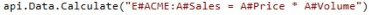
The above script shows incorrect use of a Data Unit Dimension in the destination Member Script, which results in an error upon execution.
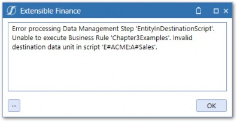
Figure 3.5
ADC functions can never write to Data Units outside the one being processed. Instead, if needing to limit Calculations to specific Data Unit Dimensions, preceding If statements should be used. Their use is described in a later section in this chapter.
api.Data.Calculate › Simple Example › Breakdown › Current Data Unit Being Processed
Data Unit Dimensions in the Source Scripts
Data Unit Dimensions can be used in Source Member Scripts (right side of the formula). Since Data Buffers do not include Data Unit Dimensions, Data Buffers from ‘outside’ Data Units will still match up with Data Buffers from the current Data Unit if cells within both Data Buffers have the same dimensionality.
The above example pulls the A#Volume Data Buffer from the Global Entity and multiplies it by the
A#Price Data Buffer from the current Entity being processed.
| Note: When referencing Entity in a Source Member Script, C#Local should also be included. This is because if the Entity in the Data Unit currently being processed has a different currency assignment, then that currency will be used to retrieve the Data Buffer which will result in no data. Using C#Local will ensure that the data is pulled from the Entity’s assigned currency where data is entered. |
api.Data.Calculate › Simple Example › Breakdown
Unbalanced Buffers
We refer to Data Buffers with the same common Dimensions as ‘Balanced’ Data Buffers. OneStream will only perform Data Buffer math on Balanced Data Buffers unless a special function is used (more on that later). The reason for this is the potential to cause data explosion which means that our Calculation might result in a lot of potentially unwanted data intersections. Let’s look at an example.
Larry wants to calculate COGS for the Budget by multiplying the baseline Product manufacturing cost by an inflation rate. Manufacturing costs are entered for each Product while the inflation rate (think of the national CPI) is not specific to a Product so is entered at U1#None.
We might start by writing out the Calculation like this:
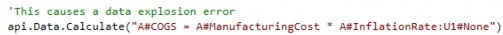
Larry, being the knucklehead that he is, assumed that each data record from the A#ManufacturingCost Data Buffer would multiply against the Inflation Rate entered in U1#None. This is not the case as the inclusion of the U1 Member in the first operand makes this unbalanced. Let’s look at what happens if we try to execute.
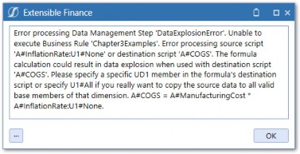
Figure 3.6
Whomp, Whomp! OneStream will immediately throw an error message at you when executing an unbalanced formula. Reading through the error message will give us a pretty good explanation of why this is explicitly prevented. Let’s dig a little and log the A#ManufacturingCost and A#InflationRate:U1#None Data Buffers:
Inflation Rate Data Buffer:
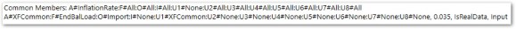
Figure 3.7
Manufacturing Cost Data Buffer:
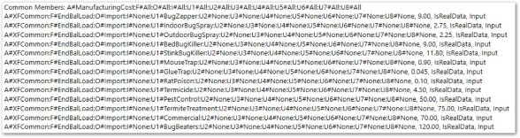
Figure 3.8
The A#InflationRate Data Buffer has U1#XFCommon in the dimensional details while the A#ManufacturingCost Data Buffer does not. Since the Data Buffers do not contain any cells with the same dimensional details, the Calculation doesn’t result in any result cells.
api.Data.Calculate › Simple Example › Breakdown › Unbalanced Buffers
Data Explosion
The error message we received suggests that our formula could cause data explosion. This sounds scary, and so it should! Data explosion can wreak havoc on a database by filling it with zeros or unwanted data.
The data explosion warning is triggered anytime a source script contains Dimensions not contained in the destination script.
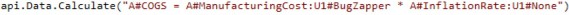
The above script is a better example of a formula that could cause data explosion.
Since U1 is included in both source scripts, Data Buffer math would execute and produce a resulting Data Buffer. However, it then needs to assign the combined Data Buffer to the destination script of A#COGS. Since U1 was not included in the destination script, OneStream has nowhere to write this data. The system cannot use U1#BugZapper or U1#None because data cells were created by adding them together and it cannot arbitrarily choose one over the other. Because #All is the default setting for each unspecified Member, the formula will copy the Source Data Buffer to every Base-level U1 Member. This could create a lot of data cells and is likely not wanted, so an error is thrown.
api.Data.Calculate › Simple Example › Breakdown › Unbalanced Buffers
Using #All
I’ll cut right to the chase and say that #All should very rarely be used in Member Scripts. At worst, you can cause data explosion, and at best there is a better way.
As the earlier error message suggests, U1#All can be added to the destination script to circumvent the error message and force data explosion. Below is an example to show what actually happens when #All is used on the destination script.
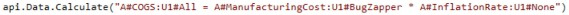
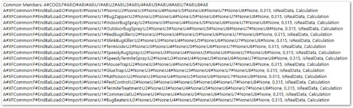
Figure 3.9
The Calculation indeed resulted in data explosion as a number was saved in every Base Member of the U1 Dimension. Because of the risk of creating many unwanted data cells, #All should never be used.
api.Data.Calculate › Simple Example › Breakdown › Unbalanced Buffers
Unbalanced Functions
Going back to Larry’s problem, we still need a way to apply the Inflation Rate which is not specific to a Product and saved on U1#None by the Manufacturing Cost which exists for each Product. In other words, Larry wants to multiply the same Inflation Rate by each cell in the A#ManufacturingCost Data Buffer.
To do exactly this, Larry can use Unbalanced Math Functions which are specifically designed to safely combine Data Buffers that don’t balance. Below is a list of the available unbalanced functions:
MultiplyUnbalancedDivideUnbalancedAddUnbalancedSubtractUnbalanced
api.Data.Calculate › Simple Example › Breakdown › Unbalanced Buffers › Unbalanced Functions
Syntax
To use these functions, wrap the unbalanced function in parentheses, and separate each Data Buffer with a comma. A third argument will reference the unbalanced part of the script.
UnbalancedFunction(DataBuffer1, DataBuffer2, UnbalancedScript)
| Note: The Unbalanced Data Buffer (Data Buffer with more Dimensions defined) should always be the second argument. |
api.Data.Calculate › Simple Example › Breakdown › Unbalanced Buffers › Unbalanced Functions
Example
Let’s correct Larry’s earlier error by rewriting our COGS formula using the
MultiplyUnbalanced function.
Let’s see what the resulting Data Buffer looks like after applying the unbalanced function.
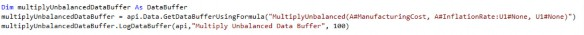
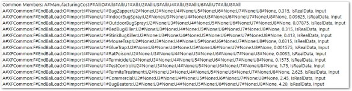
Figure 3.10
The resulting Data Buffer has been successfully created and still balances with our destination Data Buffer. No data explosion has occurred. All is good!
api.Data.Calculate › Simple Example › Breakdown › Unbalanced Buffers
Even More Unbalanced
When you’re using unbalanced functions, you are not limited to your Data Buffers being unbalanced by just one Dimension. The unbalanced functions can handle multiple unbalanced Dimensions in the unbalanced Data Buffer by concatenating them in the third argument.
api.Data.Calculate(“A#COGS = MultiplyUnbalanced(A#ManufacturingCost, A#InflationRate: U1#None:U2#None:U3#None, U1#None:U2#Accounting:U3#None”)
api.Data.Calculate › Simple Example › Breakdown › Unbalanced Buffers
Potential Issues
api.Data.Calculate › Simple Example › Breakdown › Unbalanced Buffers › Potential Issues
Double Unbalanced
If both Data Buffers in your expression are unbalanced by different Dimensions, then things get tricky.
api.Data.Calculate(“A#COGS = A#ManufacturingCost:U2#Sales, A#InflationRate:U1#None”)
For this example, unbalanced functions will not work, and we will need to employ a different technique. Stay tuned as we cover this in the next chapter.
api.Data.Calculate › Simple Example › Breakdown › Unbalanced Buffers › Potential Issues
Divide and Subtract Unbalanced
When using the unbalanced functions, the order in which each operand appears in the function matters, as the second operand must always be the Member Script with the additional Dimensions. This presents a conflict with the subtract and divide functions as the order of operations also matters when dividing and subtracting.
DivideUnbalanced(NumeratorMemberScript, DenominatorMemberScript, UnbalancedScript)
Given the above required syntax, only the denominator can have the unbalanced Dimensions attached to it. What do we do when the numerator contains the unbalanced Dimensions?
The answer is to use some basic third grade math and convert division into multiplication. We can divide the numerator by 1 and use MultiplyUnbalanced instead, since the order of multiplication does not matter.
MultiplyUnbalanced(DenominatorMemberScript, Divide(1, NumeratorMemberScript), UnbalancedScript)
For subtraction, we can still use SubtractUnbalanced while switching the intended order of the operands and simply multiplying by -1.Intended expression: MemberScript1 – MemberScript2 with MemberScript1 being unbalanced: Using SubtractUnbalanced:
SubtractUnbalanced(MemberScript2, MemberScript1, UnbalancedScript) * - 1
api.Data.Calculate
Using Constants
Constants can be easily integrated into ADC functions and Data Buffer math still works as expected.
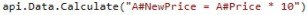
To calculate the result, OneStream will simply take each data cell in the A#Price Data Buffer and multiply it by 10, creating a new Result Data Buffer.
You cannot, however, set a destination Data Buffer equal to a constant.
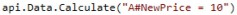
The above would cause data explosion since OneStream might assume that you wanted to set every possible Base intersection of A#NewPrice to 10. Executing this script will result in the data explosion error.
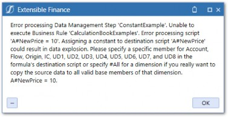
Figure 3.11
api.Data.Calculate › Using Constants
An Interesting Use Case
Let’s look at a real-world Calculation example involving a constant and inspect what happens. In this example, we are using a Growth Rate to extrapolate a future cost.
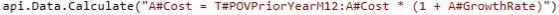
The
A#CostData Buffer from the Prior Year Month 12 is retrieved from storage in the Cube.A new Data Buffer is created in memory by adding the A#GrowthRateData Buffer to 1.
Data Buffer Math multiplies the A#CostData Buffer by the new A#GrowthRateData Buffer.
The newly-created Data Buffer is saved to the Cube.
The above is hopefully not too surprising. But what happens if the A#GrowthRate Buffer is Zero or NoData?
Adding an empty Data Buffer by a constant, results in nothing which means that T#POVPriorYearM12:A#Cost gets multiplied by nothing which equals… you guessed it… nothing.
In other words, if no growth rate is entered, the Calculation produces no results. This may be desired behavior but most likely, you would want to treat an empty growth rate as a zero which would result in A#Cost being equal to T#POVPriorYearM12:A#Cost if no growth rate was entered.
To remedy this, simply rewrite the Calculation as follows:
Using addition will still result in a Result Data Buffer, even if the A#GrowthRate is empty, which is the desired result.
api.Data.Calculate
Formula Variables
We learned in the previous chapter that a Data Buffer can be assigned to a variable using the api.Data.GetDataBuffer and api.Data.GetDataBufferUsingFormula functions. Once created, this Data Buffer variable can be used inside an api.Data.Calculate function by using a Formula Variable. Formula Variables allow the Data Buffer object to be referenced in the formula string of the ADC function. This provides a lot of flexibility, and it can even improve performance because you can calculate a Data Buffer once and re-use the variable multiple times.
api.Data.Calculate › Formula Variables
Syntax
Use the api.Data.FormulaVariables.SetDataBufferVariable function to name your Data Buffer. Pass in any name followed by the Data Buffer variable and then a True or False value. The final True or False value is for Use Indexes To Optimize Repeat Filtering. Use True if you intend to re-use the same Data Buffer using FilterMembers (performance improvement). Otherwise, use False. After you name the Data Buffer, use a $ plus the name when referencing it in the script.
api.Data.Calculate › Formula Variables
Example
We can rewrite our Sales = Price * Volume equation using Formula Variables as the Price and Volume Data Buffers instead of Member Scripts.
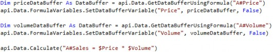
api.Data.Calculate
Converting Data Buffers with Differing Extensibility
OneStream Extensible dimensionality allows different levels of dimensional detail by Entity, Scenario, or Cube. This means that Base Members in one Scenario may be Parents in another.
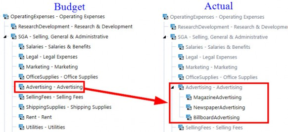
Figure 3.12
Figure 3.12 shows this concept within the Account Dimension across Actual and Budget Scenarios. Actual data is at a lower level of detail than the Budget data but a common Member – A#Advertising – is still shared.
The api.Data.ConvertDataBufferExtendedMembers function can be used to convert a Data Buffer to the dimensionality of another Cube or Scenario. The function automatically aggregates the data for extended Members in order to create data cells for Parent Members that are Base-level Members in the destination Dimensions. This is used when copying data from a Source Data Buffer created in another Cube or Scenario where one or more Dimensions have been extended.
The below script shows how to use this function to convert a Data Buffer from the Budget Scenario to the dimensionality of the Actual Scenario by collapsing the detail in the Budget to the common Member.
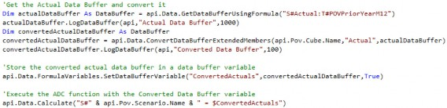
Once the Data Buffer is converted, it can be assigned to a variable using Formula Variables and used in ADC functions. We can see the detailed Accounts in the S#Actual Data Buffer:
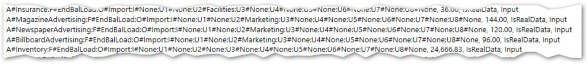
Figure 3.13
After using the ConvertExtendedMembers function on the Data Buffer, we can see the three detailed Accounts collapsed to one:
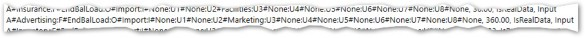
Figure 3.14
The data now matches the dimensionality of the Budget Scenario and can be copied.
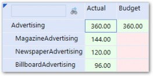
Figure 3.15
api.Data.Calculate
Limiting Scope
So far, we’ve used very limited data sets in our examples. Our Data Buffer examples have had only a handful of cells so we could reduce noise and visualize what was really happening. Data sets in the real world are much larger and messier. Anomalies in the data will cause inconsistencies and Calculation performance will often be at the forefront of your mind. Also, Calculation logic may need to vary for subsets of Dimensions. For example, Products in a certain group may calculate material costs differently than Products in another group. For these reasons, limiting the number of data cells created by your Calculations is important. Below are the ways in which we can limit the scope of Calculations:
Limit Data Unit scope using
IfStatementsReducing Data Buffer size using Dimension Filters
Collapsing detail within Data Buffers
api.Data.Calculate › Limiting Scope
Limit Data Unit Scope
Calculations within assigned Business Rules and Member Formulas will run for every Data Unit defined at runtime. However, we likely don’t want every Calculation to run at every Data Unit. There are up to seven Calculation operations per Entity in the Consolidation process. It would be very rare to have a Calculation that needed to run at all of them.
We want our Calculations to work with the Finance Engine and not against it.
Conditional statements should be added to formulas to limit which Consolidation Calculation processes will run for a particular formula. This will let Calculations run only where needed and then get picked up and processed by the standard algorithms.
The most common application of this concept is restricting Calculations to only run at C#Local and Base Entities.
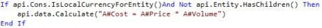
The idea here is that Calculations will run at C#Local only and then use default Translation to translate the calculated amount and consolidate the result to its Parent. This lets the default Translation and Consolidation/Aggregation components of the OneStream Calculation Engine algorithm do most of the legwork.
Below are some other API functions which will limit the Data Unit scope of the Calculation.
api.Data.Calculate › Limiting Scope › Limit Data Unit Scope
Specific Data Unit Members
We can exclude Calculations from running on certain Data Units by using various API functions. For example, if we wanted to limit a Calculation to only run on one Entity or Scenario, we could do something like this:
If api.Pov.Entity.Name.XFEqualsIgnoreCase(“Pittsburgh”) Then… If api.Pov.Scenario.Name.XFEqualsIgnoreCase(“Budget”) Then…
The above script would result in all Data Units except the Entity of Pittsburgh and Scenario of
Budget.
api.Data.Calculate › Limiting Scope › Limit Data Unit Scope
Translated Currency Only
If api.Cons.IsForeignCurrencyForEntity Then
api.Data.Calculate › Limiting Scope › Limit Data Unit Scope
Specific Scenario Types
If api.Scenario.GetScenarioType() = ScenarioType.Budget
api.Data.Calculate › Limiting Scope › Limit Data Unit Scope
Why Api.Pov.Account Won’t Work
You may be thinking that you could use api.Pov.Account, Flow, or UD to limit the data cells created in an ADC. You certainly wouldn’t be the first and it is, after all, a valid function. If you did try to use it, your script would compile and execute without error. And since we’re able to use api.Pov.Entity in this way, it should work, right? Wrong.
api.Pov.Entity, Scenario, Time, or Consolidation works because those Dimensions are in the Data Unit which OneStream has full context of. Remember from Chapter 2 that we always define the Data Unit when executing Calculations. All other Dimensions are within the Data Buffer which the Calculation Engine has no context of until it is performing Data Buffer math dictated by the formula string in the ADC.What we instead need to do is conditionally remove cells from our Data Buffers either before or after Data Buffer math is performed.
api.Data.Calculate › Limiting Scope
Dimension Filters
Functionality to filter cells from Data Buffers is built right into the ADC function. The ADC function will accept optional Dimension filter parameters in the form of a Member Filter.
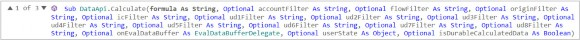
Figure 3.16
A Member Filter returns a list of Members, and through various expansion functions, Where clauses, and other tricks, can be manipulated to return just about any combination of Dimension Members that you need. Here are some examples:
A#IncomeStatement.BaseA#IncomeStatement.Base.Where(AccountType=Revenue)
U1#Top.Base.Where(NameContainsBug)
Using Member Filters, you can restrict the data cells created in your ADC functions, based on the Member’s position in the hierarchy or its properties.
api.Data.Calculate › Limiting Scope › Dimension Filters
The Member Filter Builder
The Member Filter Builder is a tool within OneStream that provides a Graphical User Interface for creating Member Filters.
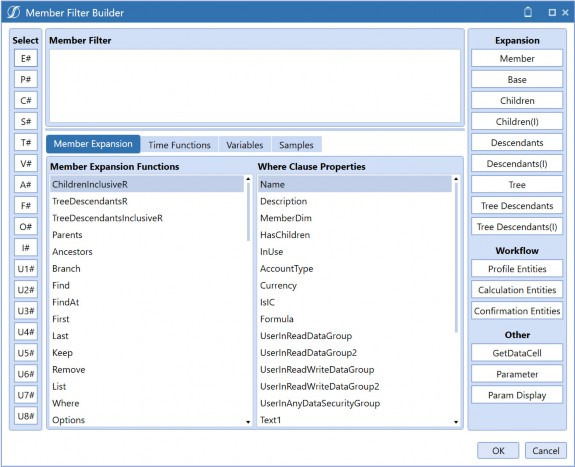
Figure 3.17
The Member Filter Builder not only helps you use the correct syntax, but provides examples and sample scripts which will help you get to the exact list of Members you need. I strongly recommend getting familiar with the Member Filter Builder and learning its expansive functionality.
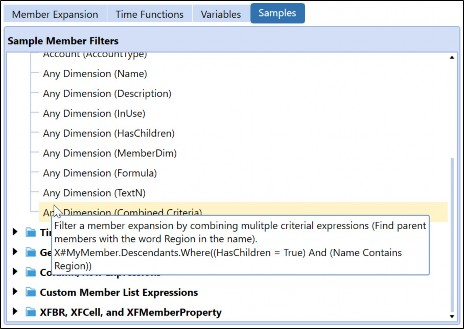
Figure 3.18
api.Data.Calculate › Limiting Scope › Dimension Filters
Applying the Member Filter
Let’s take our previous Sales Calculation example and apply a Member Filter to it so that the result is only written on Base Members of U1#Insects.
Note: If you need filters for certain Dimension Types, simply leave the filters empty for Dimensions you don’t need. Also, pay careful attention to the position of commas when applying Dimension filters. Use Intelli-Sense to ensure each Dimension is in the right argument position. For example, UD1 needs to always be in the fifth position as shown above. |
The Calculation now only saves Data Buffer cells with a U1 Member that is a Base Member of the
Insects Parent. The U1 hierarchy is shown below for reference.
Figure 3.19
Let’s look at what OneStream does under hood when executing the ADC with the filter applied.
The
A#PriceData Buffer is retrieved from storage.The
A#VolumeData Buffer is retrieved from storage.Data Buffer math multiplies the two Data Buffers together and creates a new Data Buffer.
The new Data Buffer is filtered to exclude any
U1Members not contained in the Member Filter.The newly created and filtered Data Buffer is saved to the Cube.
The added step before saving the Data Buffer will remove data cells from the Data Buffer. Here is what the Calculation result looks like before and after applying the filter.
Before Filter:
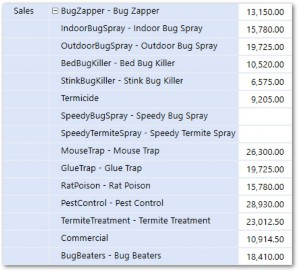
Figure 3.20
Chapter 3 After Filter:
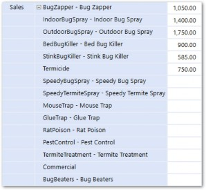
Figure 3.21
Only Base U1 Members that exist beneath Insects remain in the Result Data Buffer. We have reduced the scope of this Calculation from 13 data cells to six.
api.Data.Calculate › Limiting Scope › Dimension Filters
Base Members Only
Data Buffers will only contain data cells that are writable to the Cube. As explained previously, data can only be written to Base Members of a Cube (however, bear in mind that thanks to Extensibility, Base cells of a Cube can be Parent cells of another Cube or Scenario Type). To this point, your Member Filters used in ADC functions should also only contain Base Members. If they don’t, the filter will still work, but will technically perform slower.
api.Data.Calculate › Limiting Scope › Dimension Filters
No Duplicates
It is possible to create a Member Filter that includes the same Member twice. Here is an example:
U1#Insects.Base, U1#BugZapper
U1#BugZapper is also a Base Member within U1#Insects, so it is contained twice in the resulting Member List. If using this Member Filter elsewhere in OneStream, (e.g., a Cube View), OneStream will simply display the Member twice, clearly showing your error. Used in a formula, however, OneStream will throw an error.
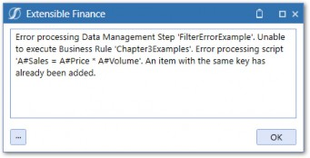
Figure 3.22
You could also theoretically have the same Member appear twice within a hierarchy, which is most likely unwanted as data could aggregate twice, throwing off the total. Using the .Base expansion on a Parent with a duplicate Member beneath it will also cause the same error, so keep this in mind when troubleshooting.
The reason for this error is because OneStream converts the Member List to a Dictionary (VB.NET class) and Dictionaries cannot contain duplicate keys.
api.Data.Calculate › Limiting Scope › Dimension Filters
Know Your Hierarchies and Use Them to Your Advantage
Creating effective Member Filters used in Calculations will require knowledge of the Dimension Member hierarchies. These hierarchies often support reporting or may have little to no structure at all, so they may not align well with your Calculation logic. In these cases, inserting Parents or creating hierarchies to support Calculations can be a useful technique.
There is minimal Calculation performance cost to adding Parent groupings within Account, Flow, and UD Dimensions. The only cost to consider is maintenance as new Members may need to be added to the groups over time, but this can be mitigated through the sharing of Parents between the main hierarchy and your alternate hierarchies used to support Calculations.
api.Data.Calculate › Limiting Scope
Collapsing Detail
The resultant Data Buffer (left side of the formula) inherits the dimensional detail of the Source Data Buffers after all Data Buffer math has been executed (right side of the equation). Leaving Dimensions off the Member Scripts is called leaving the Dimension ‘open’.
api.Data.Calculate(“A#Sales = A#Price * A#Volume”)
In the above formula, Flow, Origin, Intercompany, and all UDs are ‘open’. This means that the resulting Data Buffer will include all Members for those Dimensions where there is data (assuming we don’t apply a filter). If detail for one of those Dimensions is not necessary, we can remove it by adding that Dimension to all Data Buffer operands in the formula.
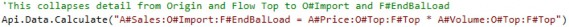
The formula has now been changed to include the Origin and Flow Dimensions. Remember, that we need to include O# in every Buffer so that our formula remains balanced. Now, all the detail in the Origin and Flow Dimensions will be collapsed to Top and written to O#Import and F#EndBal.
Since the destination Data Buffer can only contain writable Base Members, we need to pick one to write the data to. In this example, we picked O#Import and F#EndBal, but we could have also picked any other Base Member in those Dimensions.api.Data.Calculate › Limiting Scope › Collapsing Detail
Origin Dimension
Collapsing Origin Dimension detail is very common practice and should be used in almost all Calculations. Not doing so can produce unwanted results as data could exist at different Origin Members causing them not to match up when Data Buffer math is performed. Imagine if a Price was entered through a Form at O#Forms, and the related Volume imported through a file, at O#Import. Performing Data Buffer math on this data would not yield any result because the data exists at different Origin Members.
While the above example used O#Import as the destination Origin Member, O#Forms can be used as well. Both options have advantages and disadvantages.
api.Data.Calculate › Limiting Scope › Collapsing Detail › Origin Dimension
O#Import vs. O#Forms
The Origin Dimension has a special feature built in which allows a User to type directly into the
BeforeAdj Member.
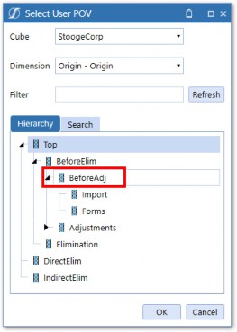
Figure 3.23
If an amount exists on the Import Member, then the difference between that amount and the typed in amount on BeforeAdj is written to the Forms Member. This allows Users to easily make adjustments to calculated data, preserving an audit trail of what was calculated versus adjusted. If Calculations are written to Forms, then this does not work as cleanly. When a User types a number at BeforeAdj, the entire calculated amount would be overwritten, destroying the audit trail of the originally calculated number.
Other issues can exist when calculated data is written to the same intersection as imported data. A situation may arise where data is imported to Import before a Calculation runs which writes to Import at the same intersection. The calculated number would override what was imported.Conversely, imported data would clear out calculated data written to Import. Both of these situations are unwanted because data integrity is lost. Writing Calculations to Forms instead may solve the issue and be the best approach in some cases. However, it is generally not recommended to have both imported and calculated data write to the same intersection. Use a UD or Flow Member to make a separation between the data, which will prevent any chance of data integrity issues.
api.Data.Calculate › Limiting Scope › Collapsing Detail
Always Collapse When Possible
While collapsing detail to Forms or Import is commonly used for the Origin Dimension, it can also apply to any other Dimension. When writing Calculations, it is important to consider each Dimension and inquire whether detail is needed for analytical or other purposes. If not, there is no reason to create unnecessary data records that can impair performance and bloat database size.
Origin, Flow, and Intercompany Dimensions are always almost collapsed. A useful technique is to save source and destination defaults to strings so that they can be reused across multiple Calculations.
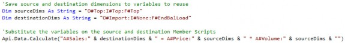
This can save time, improve consistency, and make Calculations more readable.
api.Data.Calculate
Remove NoData/Zeros
To prevent Calculations from creating Zeros or NoData cells, the RemoveNoData and
RemoveZeros functions introduced in the previous chapter should be used within ADC functions.
RemoveNoData– Removes cells with a CellAmountof NoData.
RemoveZeros– Removes cells with a CellAmountof NoDataand cells with a stored Zero.
Simply wrap RemoveZeros or RemoveNoData around the source script and all Zeros and NoData cells will be removed from the Data Buffer.
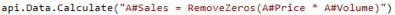
You may be wondering why Calculations would create NoData or Zero cells. Let’s look at an example.
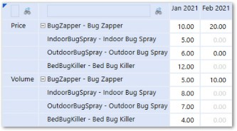
Figure 3.24
Figure 3.24 shows Price and Volume data in a YTD Scenario. Amounts were entered in January for several Products; in February, data was only entered for one Product. The Products with no data entered will appear as DerivedData with a Storage Type of StoredButNoActivity.
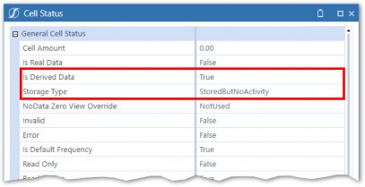
Figure 3.25
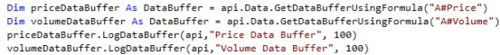
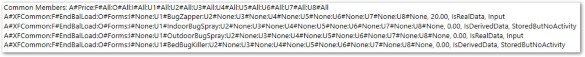
The above script logs the Price and Volume Data Buffers. Let’s look at each Data Buffer: Price Data Buffer:
Figure 3.26
Volume Data Buffer:
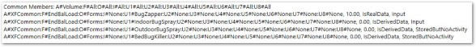
Figure 3.27
We can see the Stored, Derived, Zero Amount data cells in the Price and Volume Data Buffers.
Next, an ADC function will calculate the cost by performing Data Buffer math on the Price and Volume Data Buffers. We can simulate the result of the ADC function using a formula within the GetDataBufferUsingFormula function.
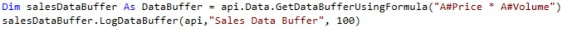
Sales Result Data Buffer:
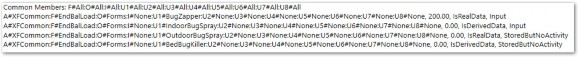
Figure 3.28
The Cost Data Buffer shows six cells of which four have a status of IsRealData. This is interesting because even though the Cell Amount is zero, the data is saved to the Cube. To prevent these types of cells from being written to the Cube, we can use the RemoveZeros function when performing Data Buffer math.
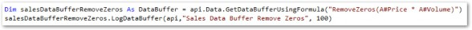
Figure 3.29
Logging the Result Data Buffer after using the RemoveZeros function shows the number of cells resulting from the Calculation have been reduced to one.
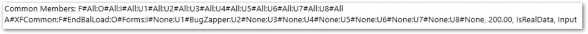
Figure 3.30
The RemoveZeros function eliminated unnecessary data cells from our Result Data Buffer and should be used as a default for all ADC and GetDataBuffer functions.
api.Data.Calculate
Durable Data
Another way we can manipulate our Data Buffer cells before writing them to the Cube is to change the data Storage Type. By default, calculated data is stored with the Storage Type of Calculation.
We can see the Storage Type assigned to the data cells of our resulting Data Buffer, A#Sales.
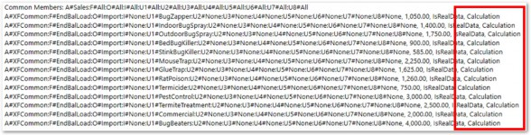
Figure 3.31
Viewing the Cell Status in a Cube View also shows the Storage Type of Calculation.
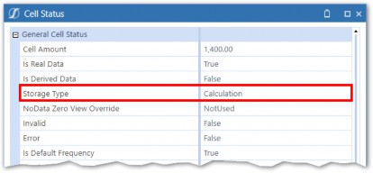
Figure 3.32
Data with this Storage Type will be cleared in the Clear Previously Calculated Data step of the DUCS. The assumption is that the Calculation Script will run again and re-calculate the data. We can prevent the clearing of this data from happening by changing the Storage Type to Durable Calculation. Data with this Storage Type will not be cleared by the DUCS.
The ADC function will accept an optional Boolean argument for isDurableData.
Figure 3.33
This is set to False by default. Setting it to True will change the Storage Type of the resultant Data Buffer. This is illustrated by modifying our example:
The logged A#Sales Data Buffer (post-Calculation execution):
Figure 3.34
The new Storage Type:
Figure 3.35
api.Data.Calculate › Durable Data
Clear Calculated Data
When using durable calculated data, it’s important to include a clear data script to preserve data integrity as running Calculations multiple times could leave behind data from previous Calculations. This can be done with the api.Data.ClearCalculatedData function. This function accepts arguments for the types of data you want to clear as well as Dimension filters similar to the ADC function. You can specify if you want to clear translated, consolidated, and/or durable data.
Figure 3.36
It is good practice to mirror the destination Member Script and any Dimension filters from your ADC function in your ClearCalculatedData function.
Figure 3.37
In doing this, we can be confident we are always clearing the data generated by the previous ADC function before calculating new data.
api.Data.Calculate › Durable Data
Custom Calculate
The ClearCalculatedData function and isDurableData = True is almost always used in conjunction with Calculations that are executed in a Custom Calculate. This is because data is not automatically cleared as it is in the DUCS. Conversely, writing the data as Durable ensures that the DUCS does not clear the Custom Calculate data. The Custom Calculate function also enables a few other features, which DUCS Calculations do not have.
api.Data.Calculate › Durable Data › Custom Calculate
Api.Pov Functions
Earlier, we demonstrated using POV functions for Data Unit Dimensions to help limit the scope of Calculations. We also mentioned that api.Pov.Account would not work in the same way because Account is in the Data Buffer and Data Buffers are filtered differently.
In Custom Calculate functions, Account-level POV Dimensions can be set within the Data Management step properties and referenced in the Calculation Script.
Figure 3.38
The POV from the Data Management step is set to a variable which is referenced in both the Clear Data and ADC functions.
Let’s take this example a step further and make the POV User-driven by linking the Calculation to a Dashboard.
api.Data.Calculate › Durable Data › Custom Calculate
Linking to a Dashboard
First, a simple Dashboard is setup, which a User can interact with.
Figure 3.39
A User can select a Product (UD1) from a combo box, which will change the Product displayed in the Cube View. A button will execute the Custom Calculate function.
api.Data.Calculate › Durable Data › Custom Calculate › Linking to a Dashboard
Combo Box
The combo box references a Member List Parameter which is defined as U1#Insects.Base.
Figure 3.40
Figure 3.41
api.Data.Calculate › Durable Data › Custom Calculate › Linking to a Dashboard
Button
The Dashboard button calls the Data Management Sequence and the parameter is referenced in the Name Value pairs.
Figure 3.42
api.Data.Calculate › Durable Data › Custom Calculate › Linking to a Dashboard
Data Management Step
The Data Management Step will now have the parameter reference in the UD1 POV field.
Figure 3.43
api.Data.Calculate › Durable Data › Custom Calculate
Execution
Now, when the button is clicked, the Product selection from the combo box will be transferred into the script. The Calculation scope is now User-driven, reduced in scope to only one selected Product.
Figure 3.44
api.Data.Calculate
Advanced Filtering with Eval
The examples described above have conveyed the various options we have to filter Data Buffers used in Calculations to reduce scope. But what happens when we have filtering requirements that the above options don’t address? What if we need to filter data cells by Cell Amount, or run complex logic on the Dimension Members of the data cells within our Data Buffers?
OneStream accommodates these requirements using a function called Eval. When implementing ADC functions, Eval provides the ability to evaluate (that’s where the Eval moniker comes from) the individual data cells in any Data Buffer. The Eval function can even be used to filter one operand in the formula instead of filtering the entire result.
api.Data.Calculate › Advanced Filtering with Eval
Putting It To Use
To put this to use, simply precede any Member Script in an ADC with an Eval wrapped in parentheses.
or:
Next, we must call a subfunction which we will add to our Calculation Script. The subfunction is referenced as another optional argument in the ADC function.
Figure 3.45
The syntax for the EvalDataBufferDelegate is AddressOf SubFunctionName. The standard subfunction name is usually OnEvalDataBuffer but this could be changed to any name you like.
The subfunction is then called below.
Figure 3.46
The Api, evalName, and eventArgs arguments are required to be supplied for this function to work. The logic within the sub function will do the following:
Loop through the data cells of the Eval Data Buffer (from the ADC function).
Perform some logic on each data cell.
Add the data cell to the Result Data Buffer object retrieved from
eventArgs.
api.Data.Calculate › Advanced Filtering with Eval
EventArgs
Eventargs is supplied to the sub function and contains various information that is passed between the ADC function and the Eval subfunction. It is used to access various objects related to the Data Buffer that our Eval function is wrapped around. We can retrieve the Data Buffer itself as well as the DestinationInfo and the ResultDataBuffer.
Figure 3.47
api.Data.Calculate › Advanced Filtering with Eval
Eval Use Case
Let’s go through an example to better illustrate the above. Let’s say we want to remove all data cells from our A#Price Data Buffer with a Cell Amount greater than 500. This is a somewhat arbitrary example but it’s nice and straightforward for illustration purposes. This would not be possible using any of the other filtering Methods described so far, so we have a good use case for the Eval.
First, let’s look at our Price Data Buffer before the Eval is applied:
Figure 3.48
The highlighted data cell within the Data Buffer is the only one that meets the criteria of being >
500. This is the data cell we want to remove using the Eval.
First, we must modify the ADC function by wrapping the Eval keyword around our A#Price operand and add the EvalDataBufferDelegate argument.
Finally, we add our subfunction.
When the ADC function runs, the Eval function will run on the Price Data Buffer and the logic within our subfunction will filter out any cells with Amounts greater than 500. Data Buffer math will then be performed on the modified A#Price Data Buffer and the A#Volume Data Buffer. The steps performed by the Calculation Engine are:
The
A#PriceData Buffer is retrieved from storage.The Evalfunction filters the A#PriceData Buffer.
The
A#VolumeData Buffer is retrieved from storage.Data Buffer math multiplies the modified Price Data Buffer and Volume Data Buffer together and creates a new Result Data Buffer.
The Sales Account from the destination script is added to the new Result Data Buffer.
The Result Data Buffer is saved to the Cube.
api.Data.Calculate › Advanced Filtering with Eval
Breakdown of OnEvalDataBuffer
The script that runs in the OnEvalDataBuffer function may look intimidating to unseasoned coders. In reality, what the code is actually doing is quite simple. Let’s break down the code, line by line.
api.Data.Calculate › Advanced Filtering with Eval › Breakdown of OnEvalDataBuffer
Lines 360-364
The subfunction is called and the Result Data Buffer is cleared to ensure we start with an empty set; the Result Data Buffer will be filled with new cells. The Price Data Buffer is checked to ensure it is not empty before continuing.
api.Data.Calculate › Advanced Filtering with Eval › Breakdown of OnEvalDataBuffer
Lines 365-373
The cells of the Price Data Buffer are looped through, using a For Each loop. Each iteration of the loop will be one of the data cells in the A#Price Data Buffer. For each iteration of the loop, we now have access to data cell information such as Dimension Members (contained in the DataBufferCellPk), Storage Type, Cell Status, and Cell Amount.
Each data cell is then checked to see if its amount is greater than 500. If it is not, it is added to the Result Data Buffer which is returned to the ADC function.
api.Data.Calculate › Advanced Filtering with Eval › Breakdown of OnEvalDataBuffer
Returning to the Api.Data.Calculate Function
The manipulated Price Data Buffer is then returned to the ADC function where Data Buffer math will multiply it by the Volume Data Buffer with the result writing to the Cost Account.
Figure 3.49
We can see that BugBeaters, with a Price greater than 500, was excluded from the Calculation result.
api.Data.Calculate
Eval2 Function
As shown above, the Eval function allows you to analyze the individual cells within one Data Buffer. The Eval2 function can be used to analyze two Data Buffers and even compare cells between them. Eval2 is the same as Eval except two Member Scripts are specified and separated by a comma. Using the Eval2, both Data Buffers can be analyzed in the subfunction.
api.Data.Calculate › Eval2 Function
Use Case
For the Budget Scenario, Sales are calculated across Products. Advertising Expense, meanwhile, is based on a fixed percentage of Sales of 10% for existing Products and 20% for new Products. Curly is hoping to automate this process, so he has more time to wisecrack with Moe and Larry.
To accomplish this, new Sales could be determined by comparing the Actual Sales to Budget Sales and determining which Products had Sales in the Budget but nothing in Actuals.
The Eval2 function can be used to retrieve the Sales Data Buffer for the last period of Actuals and the current Budget and compare the cells within the two Data Buffers. If a cell exists in the Budget
Scenario, but not in the Actual Scenario, we can safely assume that it is a new Product and can apply the Advertising Expense percentage accordingly.
The Cube View, below, shows the Sales by Product for Month 12 of Actuals and M1 of the Budget Scenario. Our Calculation will populate the last column for Advertising costs.
Figure 3.50
api.Data.Calculate › Eval2 Function
The Code
An api.Data.Calculate is used with the Eval2 function and the two Data Buffers which we want to compare.
The OnEvalDataBuffer2 subfunction is called from the ADC and shown below.
api.Data.Calculate › Eval2 Function
Breakdown
api.Data.Calculate › Eval2 Function › Breakdown
Lines 558-562
The EventArgs function is part of the Eval functionality and is used to access the Data Buffer objects we will be working with.
The OnEvalDataBuffer2 sub-function is called and the Result Data Buffer is called from EventArgs and cleared to ensure we start with an empty set. The Result Data Buffer will be filled with new cells. Next, both Data Buffers are checked to ensure they are not empty. If they are empty the Calculation will not continue and processing time will be saved.api.Data.Calculate › Eval2 Function › Breakdown
Lines 563-567
The first Data Buffer (S#Budget) specified after Eval2 in the ADC function is accessed through EventArgs as DataBuffer1. The cells of this Data Buffer will be looped through. Each cell in the loop will be check against the S#Actual Data Buffer using the GetCell function. If the cell exists, it will be stored in the cell2 variable.
api.Data.Calculate › Eval2 Function › Breakdown
Lines 568-576
The cell2 variable is then checked to see if it exists. If it doesn’t, we know that this is a new Product and we can calculate our result cell (A#Advertising) as the Budget Sales (cell1) multiplied by .2. The Result Cell Amount is set and then it is added to the DataBufferResult object.
api.Data.Calculate › Eval2 Function
The Result
After the OnEvalDataBuffer2 subfunction runs, the DataBufferResult is written to the destination script of A#Advertising.
Figure 3.51
We can see that our logic was correctly applied. We have now automated our advertising cost Budget Calculation.
api.Data.Calculate
Conclusion
As described in the examples above, OneStream’s Data Buffer math is extremely powerful in that it can be used to process hundreds or thousands of numbers with just one simple equation. Without Data Buffer math, or an equivalent scripting capability, a large multidimensional financial application would not be feasible because every intersection would need to be considered separately.
In addition to facilitating powerful Data Buffer math, the api.Data.Calculate function has built-in capabilities that allow you to manipulate the resulting data cells. This affords the Calculation writer with flexibility and precision when attempting to serve the complex financial processes employed by today’s corporations.